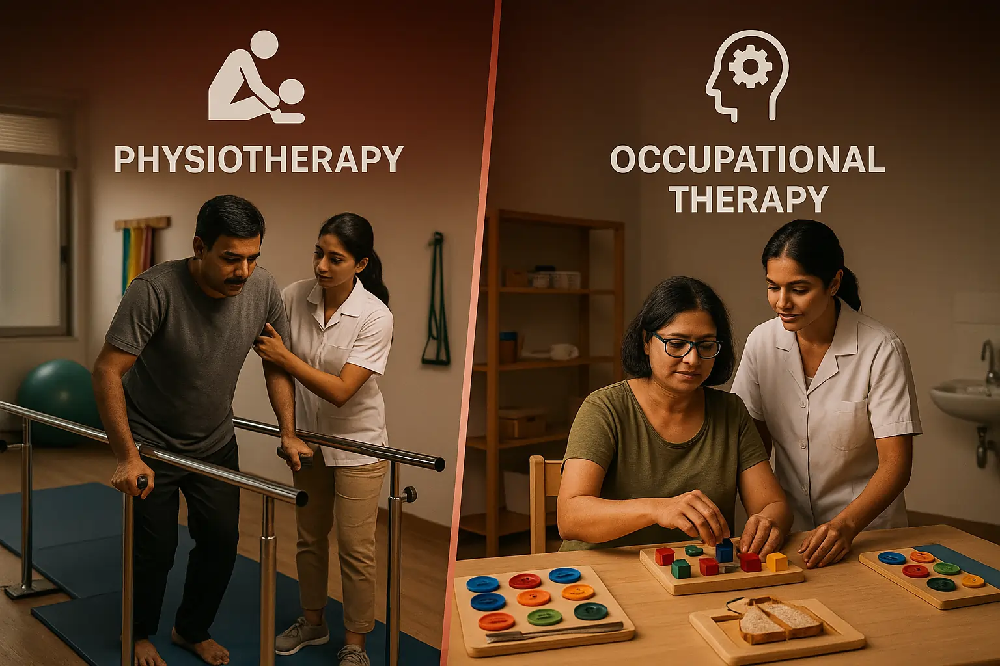

Physiotherapy vs. Occupational Therapy: What's the Difference in Neuro Rehab?


13
OCT
Apricot Care
Hello, I am from Apricot Care. If you or a loved one is recovering from a stroke, a brain injury, or any other neurological condition, you have probably heard two important words: Physiotherapy and Occupational Therapy. Maybe you have even asked, "Aren't they basically the same thing?"
It is a very common and very good question. The short answer is no, they are not the same. But they are like two best friends who work together for a single goal: your independence.
In this article, we will explain the beautiful difference between these two therapies in simple, clear language. By the end, you will not only understand what each therapist does, but you will also see why having both on your team is the secret to a stronger recovery.
Let's get started.
A Simple Way to Understand the Core Difference
Imagine you are building a new home.
- The Physiotherapist (PT) is like the structural engineer. They focus on the foundation, the strength of the walls, and the stability of the whole structure. They make sure your house won't fall down. In your body, this means they work on your strength, balance, and your ability to move.
- The Occupational Therapist (OT) is like the interior designer. They focus on making the house livable and functional. Where should the switches be? How will you cook in the kitchen? Can you easily use the bathroom? In your life, this means they work on your daily tasks—like bathing, dressing, and eating—so you can live independently.
You need both a strong structure and a functional design to live well in your home. Similarly, in neuro rehab, you need both PT and OT to reclaim your life.
What is Neuro Rehabilitation, Really?
Before we dive deeper, let's understand the playing field. Neurorehabilitation is not just about "getting better." It is a specialised process for people with damage to their nervous system—the brain, spinal cord, and nerves.
The main goal is to use the brain's amazing ability to rewire itself, which we call neuroplasticity. Through repeated, focused practice, we can help the brain find new pathways to regain lost functions. Both Physiotherapy and Occupational Therapy are powerful tools that use neuroplasticity to help you heal.
The Role of Physiotherapy in Neuro Rehab: Regaining Movement
Think of the Physiotherapist as your expert coach for large-scale movement. Their main question is: "How can we make your body move better, stronger, and safer?"
They look at the big picture of your physical function.
Key Goals of a Neuro Physiotherapist:
- Improving Gross Motor Skills: These are the big movements. Sitting up, standing, walking, and climbing stairs.
- Building Strength: Neurological conditions often weaken muscles. PTs design exercises to build back strength in your legs, core, and arms.
- Restoring Balance and Coordination: This is very important for preventing falls. They will put you through exercises that challenge your balance in a safe way.
- Managing Spasticity and Stiffness: They use hands-on techniques, stretches, and sometimes equipment to reduce muscle tightness.
- Retraining Gait (Walking): This is a major focus. They analyze how you walk and use specific exercises and tools to make your walking pattern more normal and efficient.
What Does a Physiotherapy Session Look Like at Apricot Care?
If you were to peek into a PT session with one of our residents, you might see:
- Practicing how to stand up from a wheelchair with confidence.
- Using parallel bars for support while re-learning to walk.
- Doing exercises on a mat to improve core strength.
- Working on a stationary bicycle to build endurance.
- The therapist stretching the resident's limbs to improve flexibility.
The tools of a PT are often things like exercise bands, weights, balance boards, and treadmills.
The Role of Occupational Therapy in Neuro Rehab: Regaining Independence
Now, think of the Occupational Therapist as your expert guide for daily living. Their main question is: "How can we help you do the activities that 'occupy' your time and give your life meaning?"
They focus on your "occupations"—which is just a fancy word for all the things you need and want to do in a day.
Key Goals of a Neuro Occupational Therapist:
- Mastering Activities of Daily Living (ADLs): These are your basic self-care tasks: bathing, dressing, grooming, toileting, and eating.
- Relearning Instrumental Activities of Daily Living (IADLs): These are more complex tasks for independent living: cooking, cleaning, managing money, taking medicines, and using the phone.
- Cognitive Retraining: Many neurological conditions affect memory, problem-solving, and attention. OTs use special exercises to sharpen these mental skills.
- Recommendation of Adaptive Equipment: They are experts in tools that make life easier. This could be a special spoon for someone with a shaky hand, a buttonhook for dressing with one hand, or a shower chair for safe bathing.
- Upper Body Rehabilitation: They focus a lot on the fine motor skills of your hands and arms, which are crucial for writing, typing, and feeding yourself.
What Does an Occupational Therapy Session Look Like at Apricot Care?
If you were to observe an OT session here, you might see:
- Practicing how to put on a shirt and trousers while sitting in a chair.
- Simulating a kitchen task, like making a cup of tea, to ensure safety.
- Doing a puzzle or a memory game to improve cognitive function.
- Learning how to use a special keyholder to turn a lock with a weak hand.
- Working on writing or typing to help someone return to work.
The tools of an OT are often things like button boards, kitchen setups, computer programs for cognitive training, and a whole cupboard of helpful adaptive devices.
Side-by-Side: A Clear Comparison Table
This table should make the partnership between PT and OT very clear.
| Situation | What the Physiotherapist (PT) Focuses On | What the Occupational Therapist (OT) Focuses On |
|---|---|---|
| Recovering from a Stroke | Strengthening the weak leg, improving sitting balance, practicing standing up, and re-learning the steps of walking. | Teaching how to dress with one hand, using a non-slip mat to eat safely, and practicing how to get in and out of the shower. |
| Living with Parkinson's | Doing big, loud movements to combat stiffness, balance training to prevent falls, and practicing strategies to avoid "freezing" while walking. | Finding ways to make handwriting clearer, adapting hobbies like gardening to be easier, and making the home safer by removing rugs. |
| Spinal Cord Injury | Teaching how to move the wheelchair efficiently, building upper body strength for transfers (e.g., bed to chair), and managing muscle spasms. | Teaching how to do upper body dressing, setting up a bathroom routine with special tools, and exploring ways to get back to work or hobbies. |
As you can see, the work of one directly supports the work of the other. The balance you build in PT helps you stand safely while washing in the OT-trained bathroom routine.
Why Most People Actually Need Both Therapies
Some families, worried about cost or time, might think about choosing one therapy over the other. This is a misunderstanding of how neuro rehab works.
Think of it this way: What is the point of being able to walk to the bathroom (a PT goal) if you cannot then manage your clothing or use the toilet safely (an OT goal)? And what is the point of learning to cook with adapted tools (an OT goal) if you cannot safely stand at the kitchen counter for five minutes (a PT goal)?
They are two sides of the same coin. A 2024 review in the Journal of Neurologic Physical Therapy found that patients who received combined PT and OT therapy showed significantly greater improvements in overall independence and quality of life compared to those who focused on just one. The whole is truly greater than the sum of its parts.
The Apricot Care Difference: A United Team for You
In many places, therapists might work separately. At Apricot Care, our biggest strength is that our Physiotherapists and Occupational Therapists are a tight-knit family. They talk about you, plan for you, and work together every single day.
Here is what that means for you:
- Shared Goals: Your PT and OT will sit together and create one unified plan. The PT's goal to "improve standing endurance" is created specifically to help you meet the OT's goal of "independent lower body dressing."
- Seamless Care: They might even have sessions together. The OT can join the PT session to see how you are transferring from the bed, and then use that information to teach you the best way to get dressed right there and then.
- Holistic View: We don't just see a "walking problem" or a "dressing problem." We see a person who wants to get back to their life. Our team approach ensures no detail is missed.
A Real-Life Story from Apricot Care
Let me share a simple story (without using any real names). One of our residents, Mr. Sharma, had a stroke that affected his right side. His PT worked tirelessly with him on standing and taking steps. He was making progress. But he became very sad. Our OT discovered why: Mr. Sharma loved reading the newspaper every morning, but he could no longer turn the pages with his weak hand.
While the PT continued to work on his leg strength, the OT immediately started working on his hand function and gave him a simple page-turner. The day he could read his newspaper again was the day his motivation skyrocketed. His PT sessions improved because his spirit was lifted. This is the power of combined care.
Your Next Step Towards Integrated Recovery
Understanding the difference between Physiotherapy and Occupational Therapy is the first step. The most important step is choosing a place where this understanding is put into practice every day.
At Apricot Care Assisted Living and Rehabilitation, we have built our program around this powerful partnership. We believe that true recovery happens when movement meets purpose, and when strength meets skill.
If you are looking for a caring, professional, and integrated team to guide you or your loved one through neuro rehab, we are here to talk.
Let's have a conversation. Contact Apricot Care today to schedule a consultation and see our home-like facility. Together, let's build a plan that gets you back to living your life.
Answering Your Common Questions (FAQs)
Q1: Which therapy should I start first?
You often
start both around the same time. There is no "first." They are equally
important from the beginning of your recovery journey.
Q2: My father can walk with a walker now. Does he still need
OT?
Absolutely. Walking is a fantastic achievement! But OT
can now help him with what he wants to do while walking. Maybe
he wants to walk to the dining hall and eat by himself, or walk to the
garden. OT will help him with the skills and safety for those next steps.
Q3: Are the therapies very painful?
Therapy should
challenge you, but it should not cause severe pain. Your therapists are
experts at knowing the difference. They will work within your comfort zone
and gradually increase the challenge as you get stronger. Communication is
key—always tell them what you are feeling.
Q4: How long will the neuro rehab process take?
This
is different for every person. It depends on the type of injury, your
overall health, and your personal goals. Our team will set short-term and
long-term goals with you and will be honest about the expected timeline.
Recovery is a marathon, not a sprint.